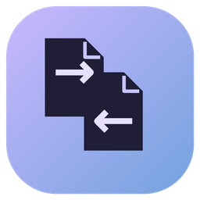
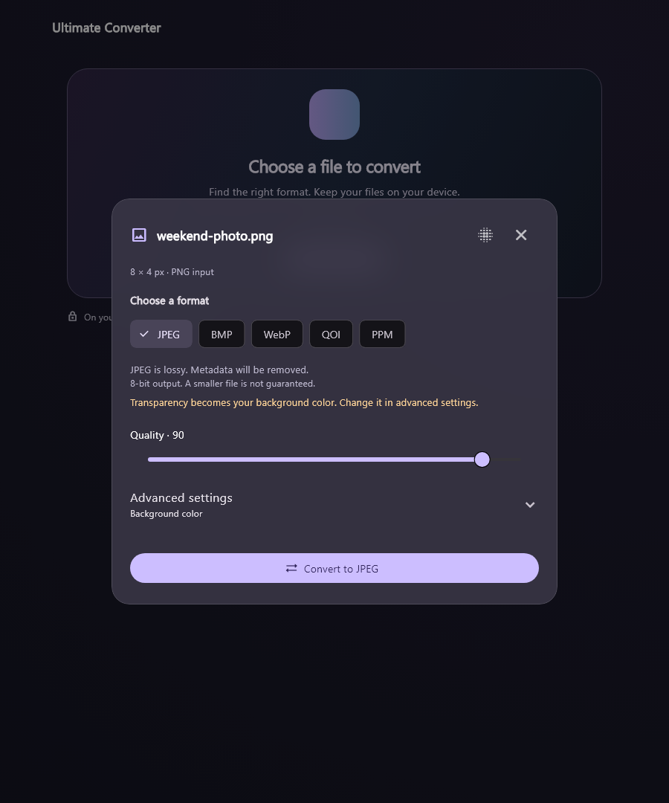

01
Images, ready to go.
Switch between everyday still-image formats. Choose JPEG quality or keep transparency in supported outputs.
PNG · JPEG · WebP · + more

ultimateconverterA different format. The same privacy.
Convert images, documents, audio, and video right on your computer.
Free · Windows 10/11 x64 · v0.1.0 Beta 1
Prefer a portable ZIP?

01 / LESS FORMAT FRICTION
From a photo for your next post to a document for your next project. One calm place to convert.
Switch between everyday still-image formats. Choose JPEG quality or keep transparency in supported outputs.
Move between document formats. Recover readable text, headings, and tables from PDFs where the layout allows.
Convert audio, extract a soundtrack, or change a video format. Resize and shrink supported video files.
Format or minify JSON and XML. Convert with an explicit typed mapping, and export plain-text logs.
Available formats depend on your file and installed engines. The beta also supports selected camera RAW variants. Explore release details
KEEP YOUR FILES CLOSE
Your photos, documents, and recordings don’t need a round trip to someone else’s server. Ultimate Converter processes them on your device.
02 / A SMALLER TO-DO LIST
A simple flow up front.
The useful controls, right where you need them.
Drop it into the app or choose it from your computer. The app inspects what’s inside.
See the available outputs. Choose a format and adjust the supported settings.
Convert, choose where to save, and open your new file. Find it again in recent conversions.
A QUICK LOOK INSIDE
Meet Ultimate Converter in under a minute.
Yes. Every shipped conversion feature is free, with no account or paid subscription required. Following or supporting the project doesn’t unlock conversion features.
Yes. Conversion happens on your computer. The installer includes the conversion engines and runtime libraries. You need an internet connection to download the app or open external project links.
This release targets Windows 10 and 11 on x64 computers. macOS, Linux, Android, and iOS downloads aren’t available in this release. Broad hardware and clean-machine testing are still in progress.
The installer adds the app for your Windows account, a Start menu shortcut, and an uninstaller. No administrator access is required. For the portable version, extract the entire ZIP and run ultimate_converter.exe with its included files and folders alongside it.
The app and installer are unsigned, so Windows may display an unknown-publisher or reputation warning. The beta has been tested on the developer’s Windows machine; broader compatibility and accessibility checks are still pending. Use the official release and review its notes before installing.
Some conversions are lossy, and formats have different limits. Complex PDF layouts can change, and scanned PDFs have no OCR in this beta. Still-image conversions are limited to 32 MiB and 4 million pixels. Animated images, HDR video, encrypted documents, and unsupported codecs or RAW variants may be rejected. JSON/XML conversion uses the app’s typed mapping. Keep your originals and review important outputs.
A LITTLE UTILITY. A LOT LESS FRICTION.
All the conversion features. All on your device. All free.
Download for WindowsWindows 10/11 x64 · v0.1.0 Beta 1 · Unsigned installer